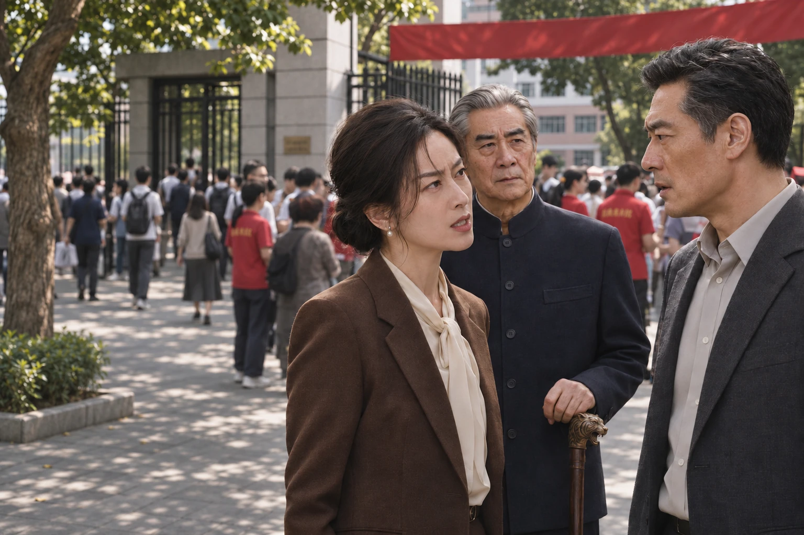
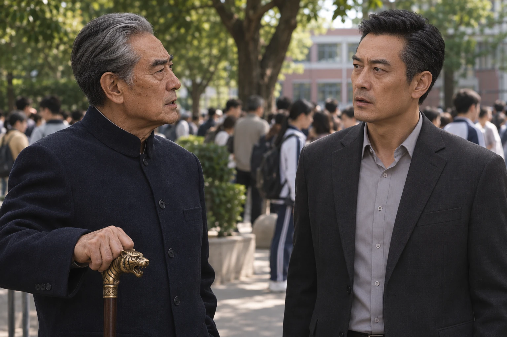
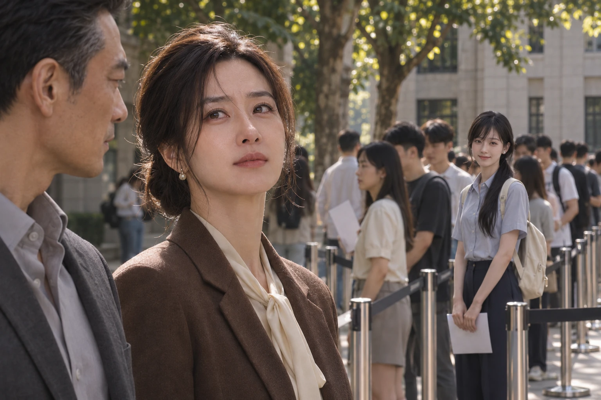
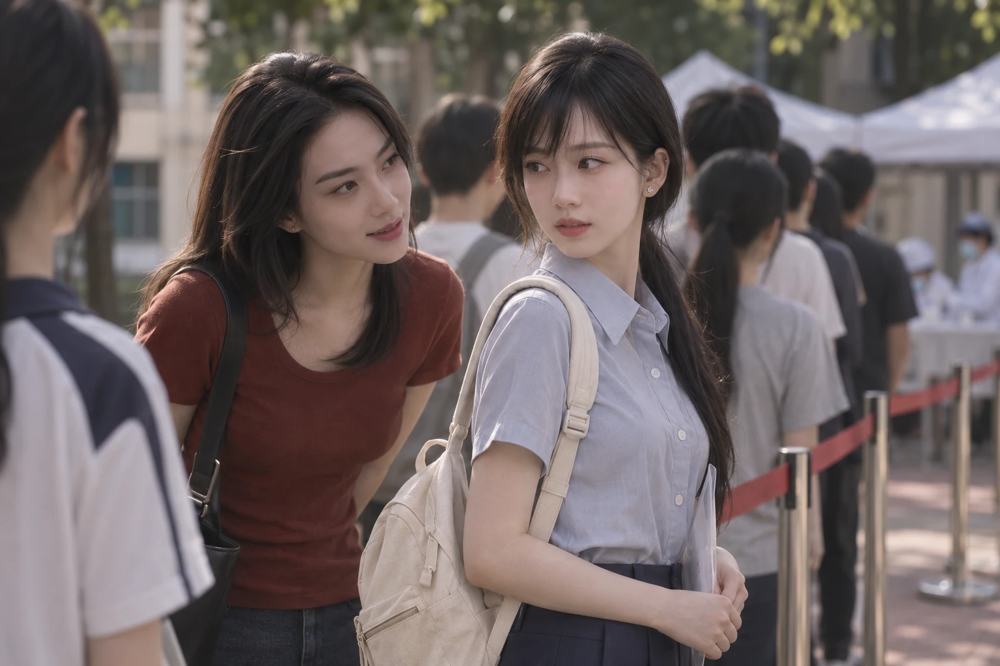
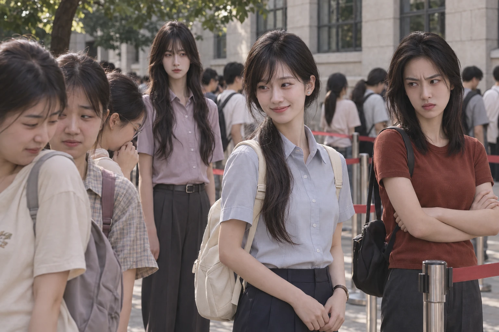

ตอนที่ 09
ลืมมารยาท
ซ่งเหวินชะงักฝีเท้า เมื่อเห็นลูกสาวเดินปลีกตัวออกไปราวกับไม่ต้องการเห็นหน้าเขาแม้แต่วินาทีเดียว เขาทำใจแข็ง ตรงเข้าไปหาอดีตภรรยาและผู้เป็นพ่อ
เดิมทีเขาไม่รู้มาก่อนว่าเสี่ยวอวิ๋นสอบสนามเดียวกับเสี่ยวหว่าน แต่ในเมื่อมองเห็นกันแล้ว เขาจะถือโอกาสนี้เข้าไปร้องขอความเห็นใจจากพ่อของตน
“พ่อครับ”
“…” ผู้เฒ่าซ่งหรี่ตาลง ในอกมีแต่อารมณ์ขุ่นมัวอันเนื่องมาจากการไร้ความรับผิดชอบของลูกชายคนโต
รู้อยู่แก่ใจว่าเสี่ยวอวิ๋นก็ต้องสอบในวันนี้เช่นเดียวกับซ่งหว่าน แต่อีกฝ่ายไม่ติดต่อถามไถ่ หรือให้กำลังใจอะไรเลย ทั้งที่มันสร้างบาดแผลร้าวลึกให้ลูกตัวเองแท้ ๆ
“อาจิ่ว” เห็นพ่อเขาเงียบขรึม จึงเลื่อนสายตาไปมองโจวจิ่ว หวังจะได้เห็นความอาลัยอาวรณ์ในดวงตาคู่สวย แต่อีกฝ่ายกลับจ้องเขาเขม็ง แทบปกปิดความโกรธเคืองไว้ไม่มิด
“เรียกแซ่ดีกว่า หย่ากันแล้วก็เป็นคนอื่น” โจวจิ่วกำหมัดแน่น จู่ ๆ ก็เกิดอาการพะอืดพะอมขึ้นมา อาจเพราะต้องเห็นหน้าผู้ชายทรยศตีสองหน้า จึงรังเกียจจนเกือบสำรอก
“อาจิ่ว.. ผมรู้ว่าตัวเองผิดแบบไม่น่าให้อภัย ผมไม่มีสิทธิ์เรียกร้องอะไรถ้าคุณจะเกลียดผมจนไม่อยากมองหน้ากัน แต่ถึงเราหย่ากัน ก็ยังเป็นพ่อกับแม่ให้เสี่ยวอวิ๋นไม่ใช่เหรอ การที่คุณทำแบบนี้ลูกจะรู้สึกยังไง” เขาหยิบยกลูกสาวคนรองขึ้นมาเป็นตัวประกันอย่างไม่มีทางเลือก
“หยุดพูดถึงเสี่ยวอวิ๋นเดี๋ยวนี้นะ” โจวจิ่วอารมณ์ไม่มั่นคงอยู่แล้ว พอได้ยินเขาอ้างเสี่ยวอวิ๋นขึ้นมา ทำเอาปรี๊ดแตก เส้นเลือดบริเวณขมับเต้นตุบ ๆ หากไม่ติดว่าตรงนี้มีคนหลายร้อย เธอคงหาอะไรใกล้ตัวเขวี้ยงใส่ให้หายโมโห

“หมายความว่ายังไง เสี่ยวอวิ๋นเป็นลูกสาวเรานะ คุณคงไม่คิดกีดกันผมกับลูกใช่ไหม” ซ่งเหวินหน้าเสีย เขาเพิ่งเคยถูกภรรยาตวัดเสียงใส่ครั้งแรก
ที่ผ่านมาโจวจิ่วเป็นภรรยาที่อ่อนหวานเพียบพร้อม เธอไม่เคยสร้างความลำบากใจให้เขาไม่ว่าเรื่องใดก็ตาม ต่อให้เธอโกรธก็ไม่ได้ใส่อารมณ์ แต่จะพูดคุยกับเขาด้วยเหตุผลเสียมากกว่า
“อาจิ่วไม่กีดกัน แต่แกเป็นคนละเลยลูกไม่ใช่เหรอ” ซ่งเต๋อกดเสียงต่ำ กลั้นอารมณ์ไม่ให้เผลอยกไม้เท้าฟาดอีกฝ่ายอีกหน
“ผมไม่ได้ทำแบบนั้นนะครับ” ท่าทีซ่งเหวินอ่อนลงทันควัน เขาไม่กล้าเถียงว่าเพราะพ่อไล่เขาออกจากบ้านต่างหาก
“โอ้ แล้วห้าวันที่ผ่านมาแกมุดหัวทำอะไรอยู่ล่ะ ทั้งที่รู้ว่าใกล้วันสอบสำคัญของเสี่ยวอวิ๋น แต่แกไม่แม้แต่จะติดต่อหาลูก มาวันนี้แกยกเรื่องลูกมาอ้างได้คล่องปาก ถามจิตสำนึกตัวเองสักหน่อย เห็นแก่ตัวเกินไปหรือเปล่า”
ซ่งเหวินอึ้งงัน เขาไม่ได้คิดถึงข้อนี้จริง ๆ เนื่องจากยังโกรธที่ลูกสาวคนเล็กไม่รู้ความ เขาเลยลองไม่ติดต่อ และเฝ้าดูว่าลูกจะเป็นฝ่ายโทรมาหาเขาหรือไม่ เพราะที่ผ่านมาซ่งอวิ๋นติดเขาไม่น้อย เขาจึงหวังว่าเธอจะทนไม่ไหว แล้วเป็นฝ่ายมาขอร้อง ให้เขาไม่หย่ากับโจวจิ่ว
“ผมขอโทษครับพ่อ ผมเพิ่งฟื้นตัวไม่นาน มัวแต่ยุ่ง ๆ เรื่องเอกสารหลายอย่าง ก็เลยไม่ได้โทรหาอาอวิ๋น”
“แต่ยังมาเชียร์ลูกรักได้” ผู้เฒ่าซ่งกลั้วหัวเราะไร้อารมณ์ พลางโบกมือปัดรำคาญ “ช่างเถอะ ไปทำหน้าที่พ่อของซ่งหว่านดีกว่า แกบอกเอง เด็กคนนั้นไม่เหลือใครแล้ว”
“นั่นหลานพ่อนะครับ ถึงจะเป็นหลานนอกสมรส แต่เธอมีสายเลือดตระกูลซ่งครึ่งหนึ่ง พ่อเมตตาเธอไม่ได้เลยเหรอ” ซ่งเหวินปวดใจ เด็กดีอย่างซ่งหว่านกลับไม่เป็นที่รักใคร่ของซ่งเต๋อ
“มั่นใจแล้วเหรอว่าเป็นลูกแกจริง ๆ” ซ่งเต๋อบีบไม้เท้าหัวพยัคฆ์ ถามสิ่งที่ค้างคาใจออกไปในท้ายที่สุด

อันที่จริงเขาอยากถามตั้งแต่วันที่เด็กคนนั้นเข้ามาในบ้านซ่งแล้ว แต่กลัวจะเป็นการทำร้ายจิตใจเด็กเกินไป ดังนั้นเขาจึงต้องยับยั้งชั่งใจไว้
“พ่อ!!” ซ่งเหวินเบิกตากว้าง ใบหน้าแดงก่ำเพราะความโกรธเคือง คาดไม่ถึงว่าพ่อจะคิดเช่นนี้กับลูกสาวของเขา นั่นหมายรวมถึงพ่อมองฮวาผิงเป็นผู้หญิงไม่ซื่อสัตย์ ยิ่งคิดเขายิ่งรับมันไม่ได้
“เด็กคนนั้นไม่มีอะไรคล้ายแกเลยสักอย่าง” ผู้เฒ่าซ่งมองเมินความเกรี้ยวโกรธของลูกชาย
“เสี่ยวหว่านมีสายเลือดตระกูลซ่งจริง ๆ ตอนเกิดอาผิงแสดงความบริสุทธิ์ใจด้วยการให้ผมตรวจดีเอ็นเอ”
ซ่งเหวินขบกรามแน่น ฮวาผิงเป็นผู้หญิงที่ดีและเสียสละที่สุดเท่าที่เขาเคยเจอมา เธออยากให้สบายใจว่าอาหว่านเป็นลูกสาวแท้ ๆ ของเขา เพราะเขามีเวลาอยู่กับเธอน้อยมาก เกรงว่าเขาจะเคลือบแคลงใจ จึงตรวจตั้งแต่เนิ่น ๆ
ฉะนั้น ต่อให้ซ่งหว่านหน้าไม่เหมือนเขาอย่างไร เขาก็ไม่เคยสงสัยอะไรเลย ดีเสียอีก ลูกสาวหน้าตาเหมือนอาผิง เวลามองหน้าลูกก็เหมือนอาผิงยังอยู่ตรงนี้กับเขา
“อ้อ” ผู้เฒ่าซ่งยังไม่ปักใจเชื่อ แต่ในเมื่อลูกชายมั่นใจขนาดนี้แล้ว เขาก็ขี้เกียจต่อความยาว
ซ่งเหวิน “…”
บอกตรง ๆ ว่าไม่เชื่อยังดีกว่ารับคำเชิงรับรู้แต่ไม่รับเรื่องเช่นนี้
“ฉันยังจำได้ดี ตอนนั้นแกเดินมาบอกฉันว่าเลิกกับหญิงแซ่ฮวาเพราะหล่อนไม่อยากมีลูก สุดท้ายก็เห็นมีซ่งหว่านออกมา แกคงวางแผนทุกอย่างไว้ตั้งแต่ตอนนั้น ฉันติดใจแค่ข้อเดียว ทำไมแกต้องทำแบบนั้นด้วย”
เขามั่นใจว่าตนกับภรรยาไม่เคยกีดกันหรือรังเกียจที่ฮวาผิงมีฐานะด้อยกว่า ไม่อย่างนั้นคงไม่ยินยอมให้ทั้งคู่คบหากันหลายปี และทวงถามถึงการแต่งงานเช่นนั้น
มือหนาข้างลำตัวเดี๋ยวกำเดี๋ยวคลาย ใจอยากโกหกให้ตัวเองดูดี แต่รู้ว่ามันไม่มีประโยชน์ “เพราะผมเป็นว่าที่หัวหน้าตระกูล เป็นว่าที่ประธานซ่งกรุ๊ป ภรรยาที่เชิดหน้าชูตาและคู่ควรต้องมาจากตระกูลที่ทัดเทียมกัน ถึงจะช่วยส่งเสริมผมได้”
โจวจิ่วสะอึก ความจริงที่หลุดจากปากเขากรีดแทงหัวใจเธอ มันทรมานจนเธอแทบล้มทั้งยืน แต่เมื่อสายตาเหลือบไปเห็นลูกสาวมองมาจากที่ไกล ๆ อย่างเป็นห่วง ความเสียใจที่คิดว่าหนักหนา พลันบรรเทาเบาบางลงอย่างน่าอัศจรรย์

แม้ความสัมพันธ์นี้เกิดจากการหลอกลวงและหวังผลประโยชน์ แต่ซ่งอวิ๋นเปรียบเสมือนของขวัญล้ำค่าสำหรับเธอ เธอแค่ต้องยอมรับเรื่องที่เกิดขึ้นไปแล้วไม่จมอยู่กับมันเพื่ออนาคตสดใสของเธอกับลูก
“ผิดแล้ว..ไม่น่าเชื่อเลยว่าฉันกับอาอิ๋นเลี้ยงแกมา ทุ่มเทให้แกได้สิ่งที่ดีที่สุดตั้งแต่เล็กจนโต แต่มันกลับหล่อหลอมให้แกกลายเป็นคนเห็นแก่ตัว โลภมากขนาดนี้”
ผู้เฒ่าซ่งผิดหวังจนไม่รู้จะผิดหวังอย่างไรแล้ว
…
ซ่งอวิ๋นต่อแถวตรวจร่างกาย ไม่วายเหลือบมองไปทางครอบครัวอยู่หลายครั้ง เมื่อเห็นแม่ของเธอเข้มแข็งกว่าที่คาดไว้ เธอก็เบาใจลงมาก แต่คล้ายว่าการเตรียมตัวเข้าสอบจะไม่ราบรื่นสำหรับเธอเท่าไหร่นัก
“คุณหนูใหญ่ซ่ง.. วันนี้สีหน้าดูดีกว่าที่คิดนะคะ” เสียงกระแนะกระแหนดังมาจากทางด้านหลัง ซึ่งหญิงสาวจำได้ดีว่าคนพูดคือใคร
‘คุณหนูเหลียงจิน’ ลูกสาวคนเดียวของประธานเหลียง ซึ่งเป็นไม้เบื่อไม้กับซ่งกรุ๊ป เพราะเป็นคู่แข่งทางธุรกิจ แต่ยามที่พบเจอกัน ประธานเหลียงกับพ่อของเธอก็ยังเป็นมิตรกันบนพื้นผิว ในขณะที่เหลียงจินมักชอบเสียดสีเธอเป็นประจำ

ซ่งหว่านแสร้งทำเป็นไม่ได้ยิน ทั้งที่ในใจหัวเราะงอหงาย เธอรู้จักซ่งอวิ๋นพอสมควร อีกฝ่ายเกลียดการโดนหักหน้า คงตอกกลับจนสร้างความเอือมระอาให้ผู้เข้าสอบโดยรอบ
ก่อนหน้านี้ซ่งอวิ๋นก็ตอบกลับไปบ้าง หากไม่ล้ำเส้นมากนัก เธอก็จะไม่ใส่ใจ คิดเสียว่าเป็นเสียงนกเสียงกา แต่ครั้งนี้เห็นได้ชัดว่าอีกฝ่ายอยากให้เธออับอายต่อหน้าทุกคน เพราะแทบไม่มีใครไม่รู้ว่าตอนนี้ตระกูลซ่งมีประเด็นอะไรอยู่
การชักจูงให้นักเรียนหลายสิบชีวิตในบริเวณใกล้เคียงหันมามองเธอกับซ่งหว่านเป็นตาเดียว คงอยากให้เธอไม่มีสมาธิตอนทำข้อสอบ
“คุณหนูเหลียงพูดจริงเหรอคะ ฉันก็นึกว่าตัวเองจะดูโทรมมากเสียอีก มัวแต่อ่านหนังสือเตรียมสอบแทบไม่ได้หลับไม่ได้นอนเลยแท้ ๆ” เธอแสร้งยกมือทาบแก้ม ดวงตาเป็นประกายระยิบระยับ
เหลียงจินกัดริมฝีปากตัวเองเบา ๆ ปกติแล้วอีกฝ่ายต้องตอบโต้ให้เธอเจ็บแสบ ยิ่งเธอแตะประเด็นอ่อนไหว ซ่งอวิ๋นควรทนไม่ได้ ทำไมถึงไม่สะทกสะท้านอะไรเลย
“เปล่าค่ะ ฉันหมายถึงข่าวดีต่างหาก มีใครไม่รู้ว่าตอนนี้ตระกูลซ่งต้อนรับสมาชิกใหม่แล้ว ถ้าฉันได้ยินไม่ผิด สมาชิกใหม่คนนี้อายุมากกว่าคุณหนูซ่งไม่กี่เดือน ฉันต้องเรียกเธอว่าคุณหนูใหญ่แทนแล้วใช่ไหมคะเนี่ย”
ซ่งอวิ๋นไม่ได้โมโหเพราะคำพูดของอีกฝ่าย แต่สายตาเธอกลับมองเลยไปด้านหน้าแวบหนึ่ง ตอนนี้ซ่งหว่านนิ่งเงียบ คล้ายว่าสิ่งที่เหลียงจินพูดถึง ไม่เกี่ยวข้องกับตนเอง เก็บอารมณ์ความรู้สึกได้ดีเยี่ยมเหมือนเดิม
“พูดด้วยความสัตย์จริง ฉันก็ไม่แน่ใจเหมือนกันว่าผู้ใหญ่ตัดสินใจยังไง ฉันก้าวก่ายไม่ได้ แต่ฉันคิดว่าคุณหนูเหลียงลืมบางอย่างไว้ที่บ้านนะคะ”
“ลืมอะไร ก็ไม่-”
“ลืมมารยาทน่ะค่ะ การที่คุณพูดถึงเรื่องส่วนตัวของคนอื่นท่ามกลางที่สาธารณะ ไม่ใช่เรื่องที่ดีเลย ตระกูลเหลียงน่าจะเคยสั่งสอนเรื่องนี้แล้วใช่ไหมคะ” ซ่งอวิ๋นยิ้มตาหยี
“มากเกินไปแล้วนะ!!”
ร่างอ้อนแอ้นเบือนหน้าหนี เป็นเชิงไม่รับฟัง พลางกวาดสายตามองนักเรียนรอบด้านที่ทำตัวเป็นผู้ชมละคร “ขอโทษด้วยนะคะ คงไม่ได้เสียสมาธิก่อนสอบกันใช่ไหม”
ถูกเสียงหวาน ๆ ดุจน้ำผึ้งถามด้วยรอยยิ้มสดใส พวกเขากลับรู้สึกร้อน ๆ หนาว ๆ อย่างอธิบายไม่ถูก ได้แต่ยิ้มแหยแล้วหันไปคนละทาง
